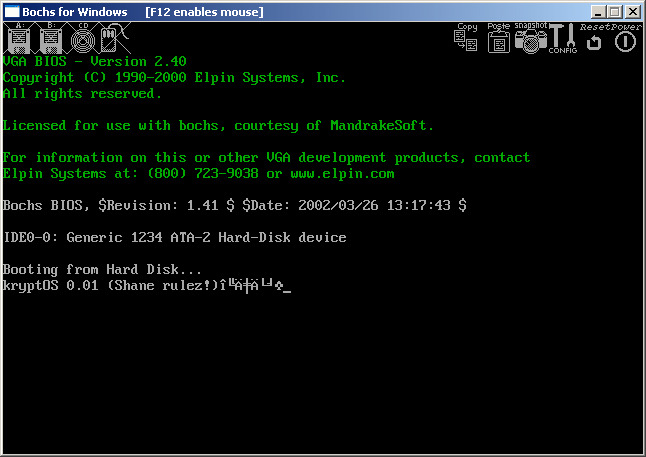

Shane O'Connell
LinkedIn |
GitHub |
Website
Toronto, Canada
Objective
My goal is to find employment income, as well as a group of like-minded people to work on engineering problems. I would prefer to work on a team that is trying to accomplish something that is considered technically difficult. I am open to working on many different types of engineering problems. I have a lot of specific experience related to FPGAs, in particular writing RTL designed to be run on FPGAs, as well as general software engineering. I feel confident in my ability to optimize complicated codebases for performance, regardless of whether they are written in software or they are hardware designs written in RTL.
I particularly like the idea of working on technology related to cultured meat, medical treatments, artificial intelligence, semiconductor device fabrication, 3D printing, robotics or space exploration. I think these fields sound interesting and in many cases are technologies that I personally want to take advantage of, so I like the idea of trying to help them improve quickly. However, some of them seem like they might not necessarily involve optimizing complicated codebases for performance, so it is difficult for me to predict whether there would be specific roles that I would enjoy. I also might be interested in any job related to systems programming, particularly operating systems and compilers, or possibly roles related to computer graphics. If there was somewhere I could work that had different teams working on more than one of the fields that I find interesting, and I could switch between them over time or at least follow their work closely, I would find that appealing.
I would prefer to work somewhere where they felt that it was important to hire a significant number of women.
Personally, I think the government should provide free food and rent for the entire population, so that large numbers of people who are interested in technology however do not have previous work experience could work on important technologies in parallel and be paid upon successful implementation of the technologies, rather than be paid a salary which I feel encourages people to work slowly. I have a page on my website describing how the government could afford to provide free food and rent for everyone, and a page on my website describing why salaried employees at corporations often have an incentive to work slowly. I feel like this is a pretty important consideration for trying to accelerate improvements in cultured meat and medical treatments in particular, due to the ethical problems that result from doing those things slowly. I have a page on my website demonstrating that it is possible for people without previous work experience to use AI in order to learn how to implement cultured meat.
I have a page on my website describing a series of frustrating experiences that I had during my last few years of employment, and it would mean a lot to me if I were able to find a social group that was able to empathize and understand how I feel about the things that I describe on the page. That page, as well as my resume, currently reference a disagreement that I had with my former coworkers with regards to a paper that Intel published in which my name was removed. I feel conflicted about this because I do not want future employers to think that I would publicly complain if I had a minor disagreement with them. The fact that my name was removed, along with a few other things that have occurred, have caused me to be worried that there might be a lot of people who dislike me, and so I want to be able to present my point of view in case there is any false information about me that might cause me to be unable to find another job. I expect this to be a one-time thing if I can find some other social group where I fit in. I also plan to update my website and deemphasize the parts that reference it at some point, especially if I am on good terms with my former coworkers again. If you read the page about being trapped in my apartment, I hope you can understand that I am in a highly unusual situation in which it is difficult to decide on the best course of action.
Work Experience
- Experienced the events that led me to create a page on my website about being trapped in my apartment
- Possibly discovered a subconscious language that the right brain hemisphere in each person uses to communicate with the right brain hemisphere in other people
- Wrote a custom Linux package manager written in Python
- Wrote software in Python for managing large amounts of information saved from the Internet
- Designed and implemented a custom network firewall which uses a custom protocol over a serial cable in an attempt to prevent the Intel Management Engine from accessing the Internet using Ethernet
- Learned the Rust programming language by reading the entire The Rust Programming Language book that came with Rust 1.82.0 (Rust edition 2024)
- Did not make any employment income during this period
- Responsible for the development of RapidSilicon's timing analysis software
- Partially completed code to allow the VPR open source placement and routing engine to interface with OpenSTA to analyze timing, rather than using the Tatum timing analyzer that is part of VPR
- Joined my coworkers from the DLA team at Intel after several of them had quit their jobs at Intel to get jobs at Groq
- Worked on an MLIR-based compiler written in C++ that compiles neural network models written in PyTorch and ONNX for the Groq TSP
- Performed optimizations which resulted in significant improvements in compile time as well as execution time on the Groq TSP
- Designed improvements to the representation of graphs between compiler passes which reduced the complexity of representing graphs and reduced the complexity of the algorithms that operate on it
- Quit my job after I thought my computer had been hacked by people from work

{kind=link}
- One of three founding members on the Deep Learning Accelerator project for Intel FPGAs
- Designed hardware (RTL) for accelerating neural networks on FPGAs
- Played a strong technical role over the life of the project, by identifying new optimization opportunities and providing guidance to newer members of the team
- Implemented hardware designs using a combination of SystemVerilog and OpenCL C using the Intel FPGA SDK for OpenCL
- Provided feedback and suggestions for optimizations to improve the Intel FPGA OpenCL compiler based on real-world use
- Came up with the idea of using block floating point for AI acceleration, and later found out that my name had been removed from the paper that my team wrote about the technique
{kind=link}
{kind=link}
- Developed and maintained software code in C and C++ for the FPGA SDK for OpenCL
- Implemented new features, fixed bugs, and improved performance of the runtime and Linux device driver code
- After December 2015, this position was at Intel, which acquired Altera
- Worked on the TimeQuest timing analyzer, part of the Quartus FPGA design software
- Developed and maintained software code for a large C++ application that analyzes circuit timing using multi-threaded graph traversals on large graphs with millions of edges and nodes
- Analyzed performance with code analysis tools and implemented changes to improve performance
- Designed RTL hardware cores in SystemVerilog for FPGAs to implement various networking protocols including OTN, Ethernet, and Fibre Channel
- Analyzed designs using the Quartus FPGA software to find ways to reduce area and improve performance
- Before starting as a regular employee in May 2010, worked at the company as a student for three four-month co-op work terms in April 2008, January 2009, and August 2009
- After December 2010, this position was at Altera, which acquired Avalon Microelectronics
- Developed new features and fixed bugs in the Windows Mobile version of Consilient's primary consumer software application, Consilient Push, using C# and C++
- Performed black box testing of the Java version of Consilient Push
- Worked at the company for two four-month student co-op work terms in January 2007 and August 2007
- Provided technical support for computer issues
- Created a system for forwarding log messages from Linux, UNIX, and Windows machines to a central server
- This position was a four-month student co-op work term
- Made pizzas and prepared salads for customers
- Washed dishes
- Primarily worked at the location inside the food court at my university
- Became interested in operating systems and assembly language while in high school
- Created a website describing my plan to create an operating system which was able to compete with Microsoft Windows
- The project did not proceed very far, however it did reach the point where the operating system was able to boot and print a message
{kind=link}
{kind=link}

- Delivered newspapers every day
- Delivered advertising flyers once per week
- Collected cash payments from customers
- Created a website which provided information for fans of the Animorphs book series
- Wrote JavaScript code to implement interactive browser-based quizzes and short stories which allowed arbitrary words to be replaced (mad libs)
- Experienced copyright infringement when I noticed that my JavaScript quiz code had been copied verbatim into another fan website which had a quiz
- Was sent an Animorphs card game for free by the company that made it in order for me to review it on my website, though if I remember correctly I believe I did not follow through and write the review
Skills
Programming Languages
Rust, C++, Python, SystemVerilog, OpenCL, HTML, JavaScript/TypeScript
Tools
git, bash, vim, tmux
Education
University of Toronto
- Master of Engineering, Computer Engineering (2018)
Memorial University of Newfoundland
- Bachelor of Engineering, Computer Engineering (2010)
Publications
- DLA: Compiler and FPGA Overlay for Neural Network Inference Acceleration 28th International Conference on Field Programmable Logic and Applications (FPL), August 2018 (with 10 other co-authors) https://doi.org/10.1109/FPL.2018.00077
- Harnessing Numerical Flexibility for Deep Learning on FPGAs HEART 2018: Proceedings of the 9th International Symposium on Highly-Efficient Accelerators and Reconfigurable Technologies, June 2018 (with 10 other co-authors) https://doi.org/10.1145/3241793.3241794
- An OpenCL™ Deep Learning Accelerator on Arria 10 FPGA '17: Proceedings of the 2017 ACM/SIGDA International Symposium on Field-Programmable Gate Arrays, February 2017 (with 4 other co-authors) https://doi.org/10.1145/3020078.3021738
Patents
- Floating-point decomposition circuitry with dynamic precision Patent pending, published 2020-07-09 (with 2 other co-inventors)
- Fast filtering US Patent 10083007, granted 2018-09-25 (with 3 other co-inventors)
- Methods and apparatus for rapid interrupt lookups US Patent 9811484, granted 2017-11-07 (with no other co-inventors)
Last Update: 2026-09-03